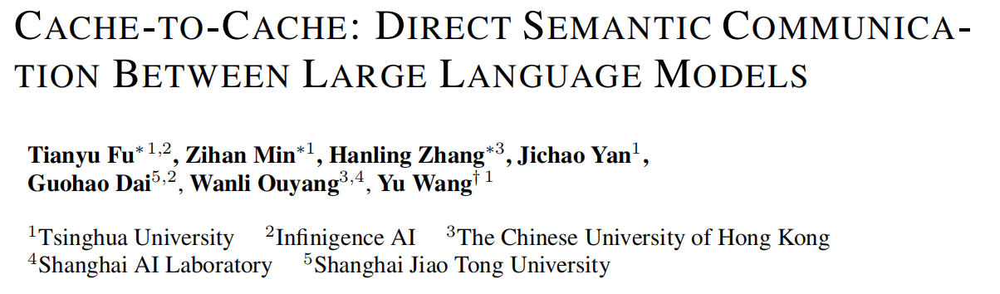
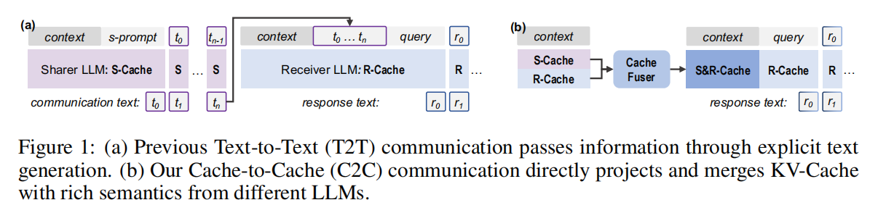
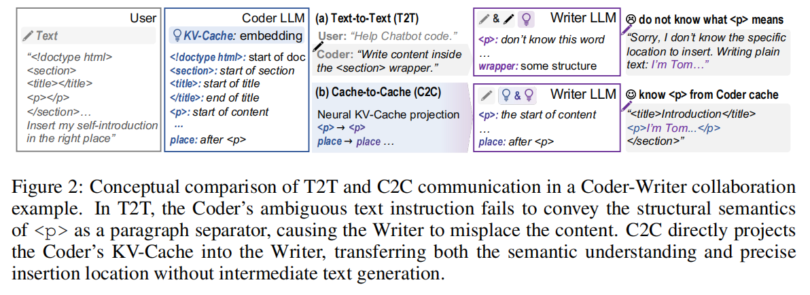
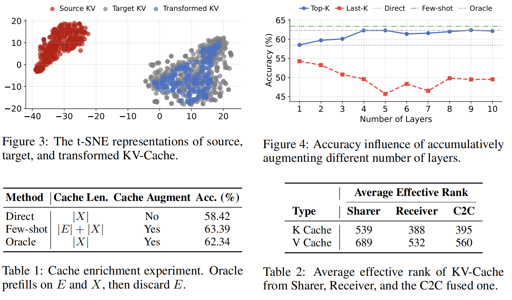
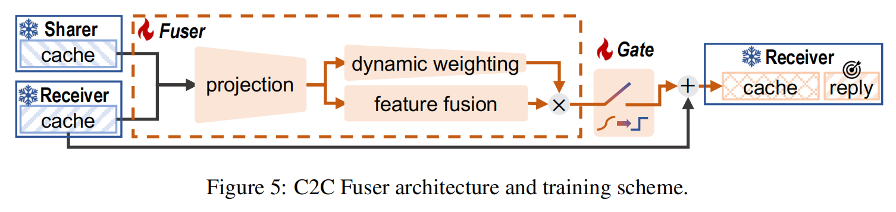
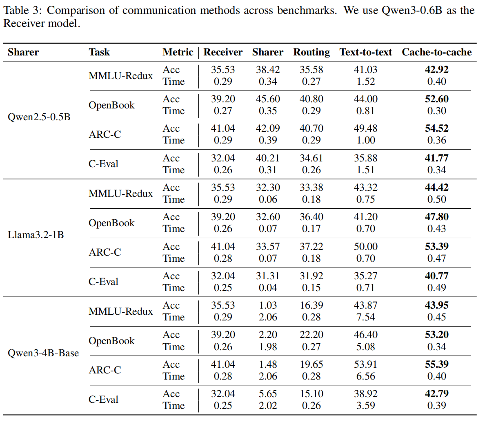
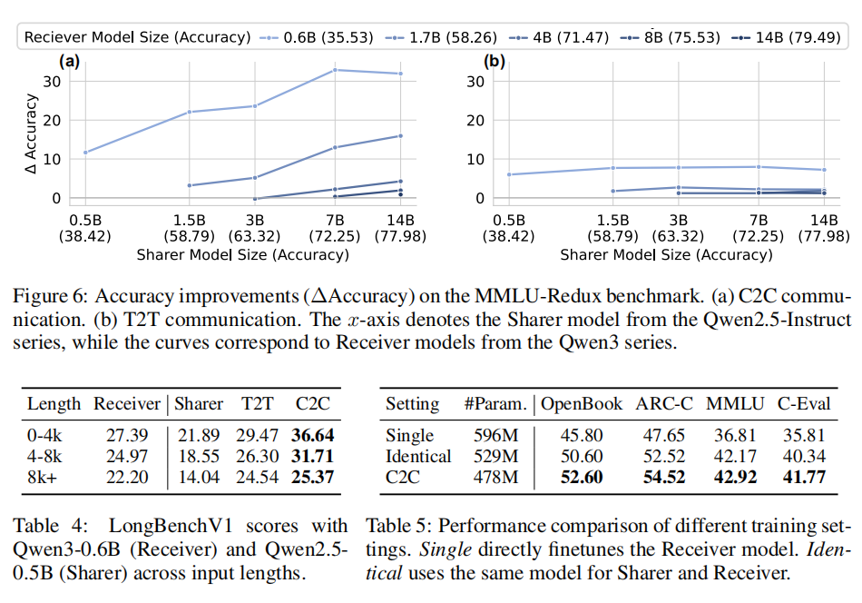
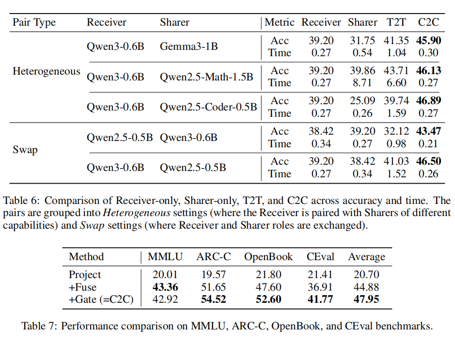

💡 Motivation（动机 / 背景）

- 现状：多-LLM 系统通常通过 文本（Text-to-Text, T2T） 相互通信 —— 一个模型生成文本，另一个模型再读入文本并处理。这种方式存在的信息瓶颈（高维内部表示被压成文本）、歧义性（自然语言本身的模糊性）以及 串行解码带来的延迟 等问题。
- 问题：文本通信无法完整保留模型内部的高维语义信息（例如 KV-Cache 中的 rich semantics），同时文本通信需要逐 token 解码，增加通信与推理延迟。
- 提出的问题（核心研究问）：LLM之间能否“超越文本”直接通信？能否通过共享/转换/融合 KV-Cache（key/value cache）来实现更丰富、更低延迟的语义通信？（文中以 “Can LLMs communicate beyond text?” 作核心驱动。）
- 主要观察驱动：作者的 Oracle 实验显示 (1) 在不扩大序列长度的前提下，丰富 KV-Cache 可以提升回答质量； (2) 不同模型的 KV-Cache 在表示空间上是可转换/可对齐的（经过训练的简单 MLP 可将一个模型的 KV 映射到另一个模型空间）。 这些观察支持用 KV-Cache 作为通信媒介的可行性。
⚔ Challenges（挑战）

- 跨模型的 KV-Cache 表示差异：不同模型（不同族、不同规模、不同 tokenizer）在同一输入上产生的 KV-Cache 分布差异显著（t-SNE 可视化）。如何可靠地将一个模型的 cache “投影”到另一个模型的语义空间并被有效利用是挑战。
- 对齐问题（token-level & layer-level）：不同 tokenizer 产生不同 token 划分，且模型层数不同，必须处理 token 对齐和层对齐问题（避免信息丢失或错位注入）。文中提出了 token 解码再 re-encode 的对齐策略和 “terminal alignment” 层对齐策略。
- 避免破坏接收者原有语义：直接用别人 cache 覆盖会破坏接收模型已有语义/结构，需设计残差式、可控的融合机制（即 Fuser 的设计）。
- 选择性注入（哪些层注入、注入多少）：并非所有层注入都有利，单层/多层注入效果差异明显（Appendix 的单层实验显示有层增益也有层下降），因此需要 learnable gate 来选择注入位置与比例。
- 效率 / 延迟权衡：虽然 C2C 目标是降低延迟，但在实现上要保证投影/融合本身不会引入比文本通信更高的开销（设计轻量 Fuser 并冻结主模型参数以降低训练/推理成本）。
🔍 Observations / Analysis

-
Oracle（缓存富化）实验：把 few-shot 示例 $E$ 和问题 $X$ 一起 prefill，然后丢弃 $E$ 的 cache 片段，只保留对问题 $X$ 对齐的 slice（即 Oracle cache enrichment）：
$$ C^*(X) = C_{E \oplus X}[|E| : |E| + |X|] $$
在不增长 $|X|$ 的情况下能显著提升准确率，说明「上下文影响了如何把问题编码到 KV-Cache 中」，而这并非仅仅是因为额外 token 的注意力范围。详见 Table 1 与相关讨论。
其中，$C(\cdot)$ 表示 prefill 后得到的 per-token KV-Cache。
-
Cache 转换实验：使用 3-layer MLP 将大模型（Qwen3-4B）的 KV 映射到小模型（Qwen3-0.6B）表示空间，t-SNE 显示映射后的 cache 落入接收模型 KV 空间内部，但只覆盖其子集，说明可转换但不完全等价（信息子集化）。
-
层级差异：不同层对 cache enrichment 的响应不同（Appendix A.2.1 展示单层替换结果，部分层有正收益，部分层负收益），这直接促成了设计中使用 per-layer gate 的动机。
-
互补正确集：不同模型在同一 benchmark 上的正确答案集合有较少重叠（Venn 图 Figure 7），说明多模型间存在互补性，若能有效融合则能提高总体正确率。
🧠 Methods
概览：提出 Cache-to-Cache (C2C) —— 用一个神经模块（Cache Fuser）把 Sharer（来源模型）的 KV-Cache 投影到 Receiver（目标模型）的表示空间并按层残差地融合到 Receiver 的原始 KV-Cache，从而在 decode 阶段让 Receiver 利用两者的语义表示，而不必通过文字中介。
3.1 预备
输入 token 序列：
$$ X[0:n] = [x_0, x_1, \dots, x_{n-1}] $$
prefill 后 LLM 生成 per-token KV-Cache：
$$ C(X[0:n]) = [c_0, c_1, \dots, c_{n-1}] \in \mathbb{R}^{n \times d} $$
其中 $d$ 为 KV 向量维度（将各层/各头的 K/V 展平）。
Decode 时预测下一个 token：
$$ y_{i+1} = P\big(y_i \mid C(X) \oplus C(Y[0:i])\big) $$
其中 $\oplus$ 表示序列级拼接。
3.2 C2C 总体框架
在 prefill 阶段，令 Fuser 模块 $F_n$ 将 Receiver 第 $n$ 层的 cache $C_n(X)$ 和 Sharer 对应层 $C^S_{G(n)}(X)$（层映射函数为 $G$）融合，得到 fused cache：
$$ C^F = {, F_n(C_n(X), C^S_{G(n)}(X)) ,}_{n=1}^N $$
Decode 时使用 fused cache：
$$ y_{i+1} = P\big(y_i \mid C^F(X) \oplus C(Y[0:i])\big) $$
（参见论文公式 (3) 和 (4)）
3.3 C2C Fuser 结构（Figure 5）
 总体三模块设计（Residual Integration）：
Projection → Dynamic Weighting → Learnable Gate（Gumbel-sigmoid 训练 → 二值化推理）
(1) Projection Module
将 Receiver 的 KV 与 Sharer 的 KV 做拼接（concatenate），经过一层或多层投影（例如线性层或小 MLP）以统一维度 / 映射表示；紧接着做 feature fusion（可能是再一层线性/FFN 或跨-head 重组）。（论文在 Appendix 也提到 C2C-C 更复杂的 variant，会先用三层 MLP 投影）。
(2) Dynamic Weighting（输入感知的 head modulation）
按 attention-head 级别做输入相关的重权重（head-wise modulation），目的是根据当前输入动态调整 Sharer 提供信息的影响力（避免盲目覆盖）。论文称为 “input-aware head modulation”。
(3) Learnable Gate（可训练门控）
每层有一个可学习 gate 值，用 Gumbel-Sigmoid（并在训练时做温度 annealing）从可微分软选择过渡到推理期的硬二值决定（是否把该层的 fused cache 注入）。 这解决了哪些层应该注入的问题并能学到层选择策略。
3.4 Model Alignment
-
Token 对齐：将 Receiver token 解码为字符串，然后使用 Sharer tokenizer 重新编码（re-encode）；若出现 one-to-many，用 “maximal-coverage selection” （选择字符串覆盖最长的 token）作为默认策略（论文观察两种策略差异不大但 maximal-coverage 更安全）。对 template（系统角色/格式化 tokens）部分用 padding 匹配长度。
-
Layer 对齐（Layer mapping）：采用 terminal alignment（从输出侧开始对齐：最后一层对最后一层、倒数第二对倒数第二，以此类推），作者在 Appendix 比较了 depth-normalized alignment 并选择 terminal alignment，因为 empirical 效果更好。
3.5 训练方案
冻结 Sharer 和 Receiver 模型参数，仅训练 C2C 模块（Fuser）。 监督目标是 Receiver 在使用 fused cache 下的 next-token 预测（SFT 风格），即最小化标准交叉熵：
$$ \mathcal{L}{\text{C2C}} = -\sum_i \log P\theta(y_i | C^F(X), Y[0:i-1]) $$
训练步骤：
- Forward：两模型产生 cache
- Fusion：C2C 生成 fused cache
- Supervision：Receiver 用 fused cache decode，loss 反传回 C2C
训练数据：主要使用 OpenHermes-2.5 的前 500k 样本训练；优化器与超参： $$ \text{lr}=1\times10^{-4}, \text{ weight decay}=0.01, \text{warmup}=10%, T_{init}=1.0 \rightarrow T_{final}=0.001 $$ 固定随机种子 42。
📊 Evaluation
数据集与设置
- Benchmarks：OpenBookQA, MMLU-Redux, ARC-Challenge (ARC-C), C-Eval（中文）以及 LongBench（长上下文任务）。
- 设置：zero-shot，greedy 解码（temperature=0），多选题最大生成长度 = 64。
- 设备：NVIDIA A100，batch=1。
对比基线
- Receiver 单独运行（baseline）
- Sharer 单独运行（对比）
- Query-level routing（将难题路由到强模型）
- Text-to-Text（T2T）：Sharer 生成 “分析/关键信息” 文本拼接到 Receiver 输入中。
  
核心结果总结
- C2C 相较于 Receiver-only：平均提升 8.5–11%（不同表述范围 8.5–11.9%）。
- C2C 相较于 T2T：平均提升 3–5%，且推理延迟平均约为 T2T 的 1/2。
- 长上下文任务（LongBench）：C2C 持续优于 T2T，尤其在 strong→weak 设定中显著恢复弱模型性能（PGR 指标大幅提高）。
Ablation
去掉 fuse（仅 projection）性能最差；加入 fuse 后大幅提升；再加入 gate（完整 C2C）进一步提升约 3%（见 Table 7）。 说明 Projection + Fuse + Gate 三者协同作用显著。